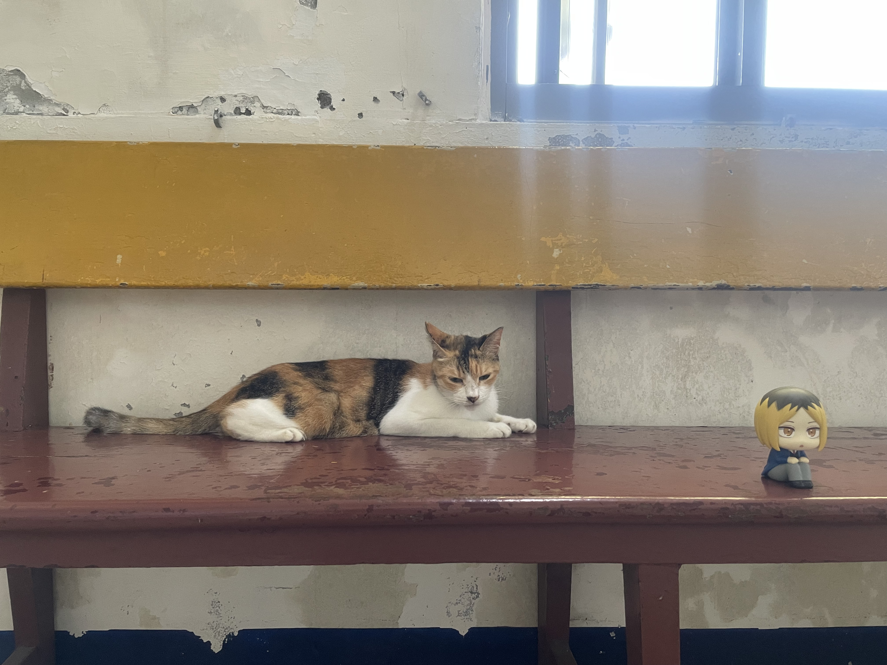
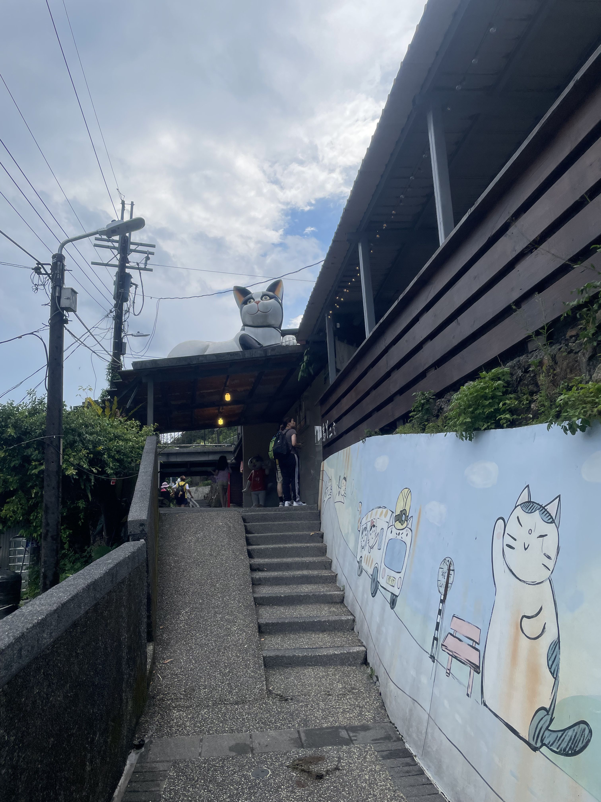
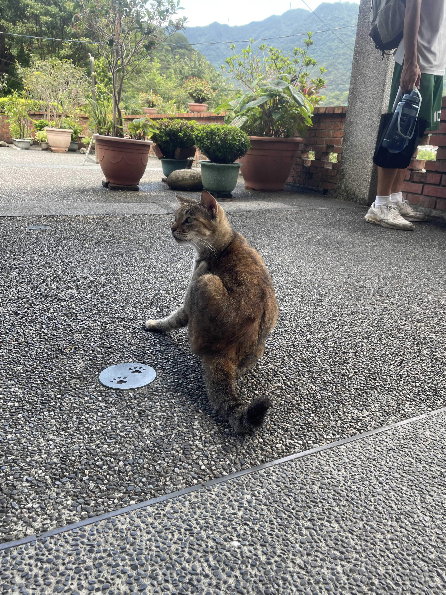
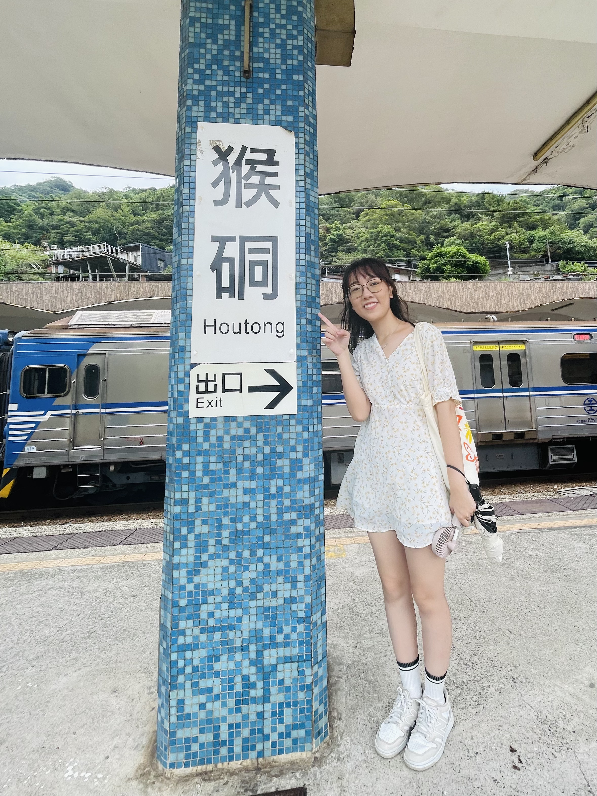
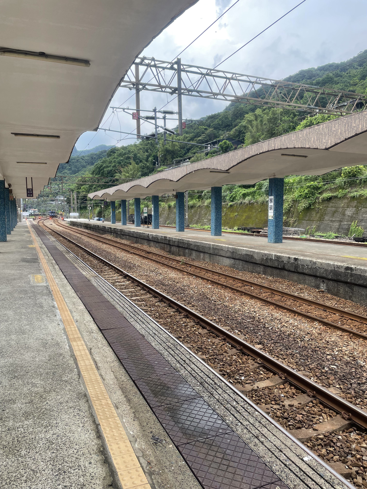
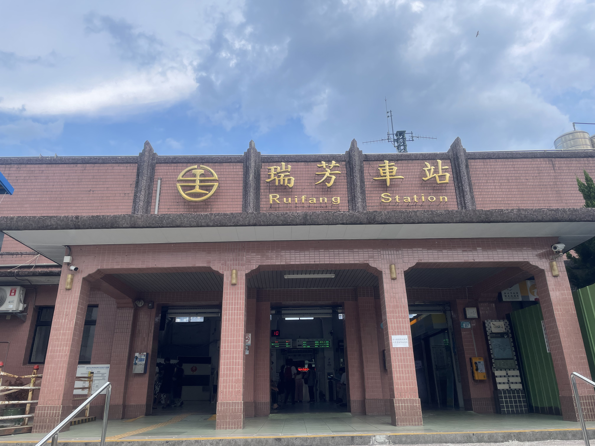
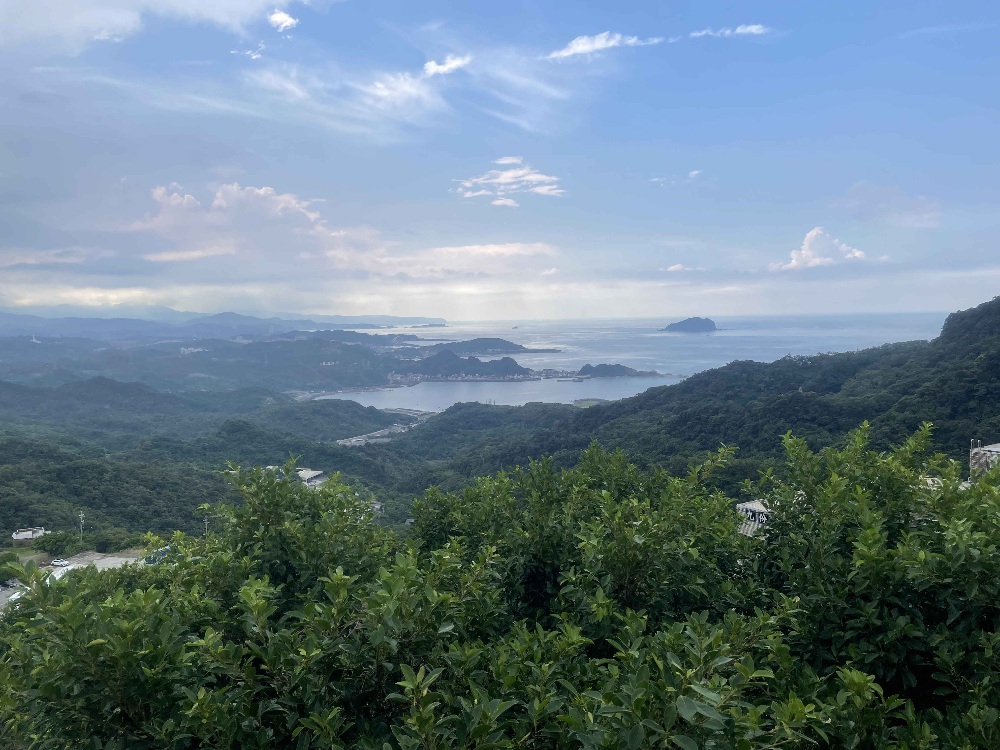
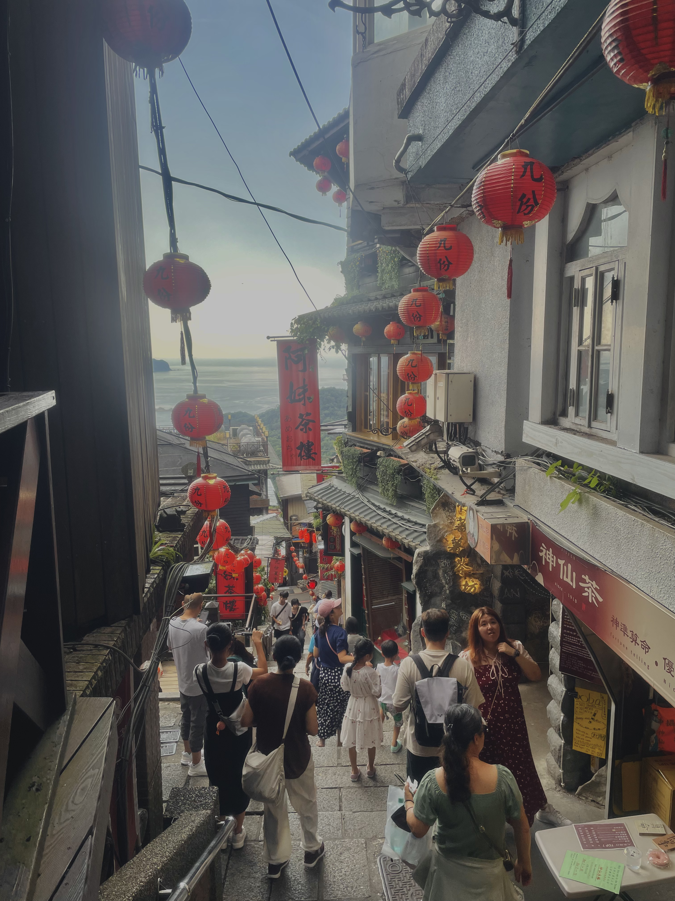
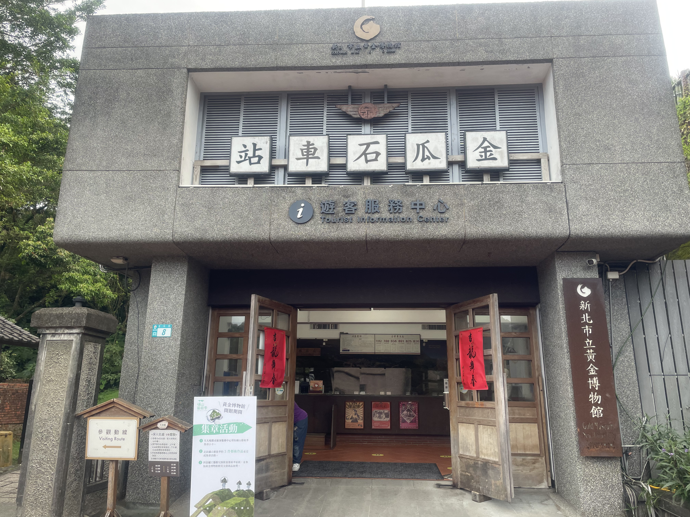
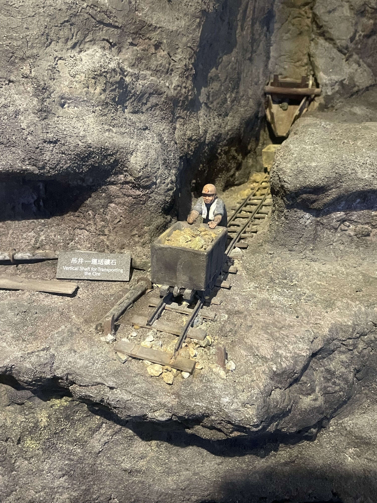

新北市瑞芳區
基本資訊
位於新北市東北部，地處基隆河與太平洋之間的丘陵與山谷地帶，是北台灣重要的歷史與觀光區域。瑞芳早期因煤礦與金礦開採而繁榮，也因交通便利成為東北角山城與沿海地區的集散地，歷史與自然資源豐富。 區內地形崎嶇、河谷縱橫，擁有豐富的山林、海岸與礦業遺跡景觀。九份、金瓜石等知名景點位於瑞芳，沿山城巷弄可感受日治時期與礦業繁盛時期的歷史痕跡，街區石階、老房與商業街形成獨特的懷舊風情。此外，區內濱海景點如鼻頭角與和平島，也提供海景與步道休閒體驗。
推薦景點
| 猴硐貓村
是台灣知名的鐵道小鎮與貓咪聚集地。原本因煤礦開採而興盛的猴硐，隨著礦業衰落逐漸沒落，但因大量流浪貓的出現，形成獨特的「貓咪村落」景觀，吸引遊客前來觀光。 村內沿著平溪線鐵道展開，老舊礦區建築與石階巷弄保留了歷史風貌。貓咪自由穿梭在鐵道、屋頂與巷弄間，形成鮮明的在地特色。遊客可以邊散步邊觀賞貓咪，沿途也有小型咖啡館、紀念品店與貓咪主題展示，使休閒與文化體驗兼具。
| 九份老街
沿著陡峭的山坡與蜿蜒石階而建，是台灣最具代表性的山城街區之一。老街發展起源於日治時期的金礦繁榮，歷經歲月沉澱，保留了濃厚的懷舊氣息與傳統建築特色。 街道雖狹長曲折，兩側卻密布茶樓、小吃攤與手工藝店，販售地道美食如芋圓、草仔粿與魚丸湯，也能購買地方紀念品與手工藝品。街區隨山勢起伏，建築多以紅磚與木材為主，錯落有致，走在街上既能感受歷史痕跡，也能俯瞰山下景色與海灣風光。
| 黃金博物館
是以金礦開採歷史與相關文化為主題的專題博物館。博物館建立於舊礦區，保留礦業遺址與歷史建築，透過展示礦業設備、文物與影像資料，呈現日治時期至民國初期金礦開採的歷史脈絡與工業文化。 館內規劃主題展覽，包括金礦開採技術、礦工生活、礦區社區發展以及金礦對地方經濟的影響，並設有互動與體驗區，使參觀者可以更直觀地了解礦業歷史。周邊環境結合山林景觀與步道系統，遊客可沿著礦山步道探索自然與歷史遺跡，享受觀光與學習的雙重體驗。









